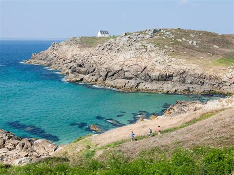
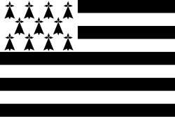

Brittany
Overview
Brittany, or Bretagne in French, is a cultural and historic region in northwestern France. Surrounded by the sea on three sides, it is known for its rugged coastline, Celtic heritage, medieval towns, and unique traditions. The region has its own language, Breton, which is of Celtic origin.
Quick Facts
- Capital: Rennes
- Regional Language: French and Breton
- Population: ~3.3 million
- Famous For: Celtic culture, seafood, rugged coasts, prehistoric megaliths
- Fun Fact: Brittany has more than 2,700 kilometers of coastline — the longest of any French region!
Popular Dishes
Crêpes & Galettes

Kig Ha Farz
Cotriade

Far Breton

Famous Landmarks
Carnac Stones

Saint-Malo

Pointe du Raz

Brocéliande Forest

Quimper Cathedral

Best Time to Visit
The best time to visit Brittany is from May to September when the weather is mild and many festivals take place, including traditional Breton music and dance events.
Regional Symbols
- Flag: 
- Coat of arms: